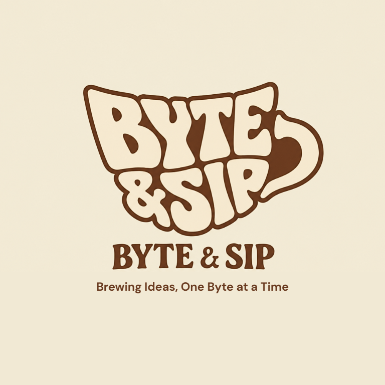
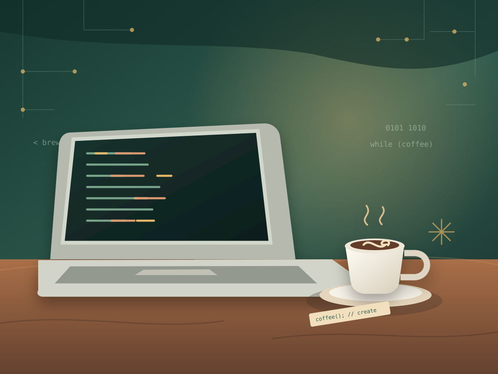

Byte N SipA welcoming coffee spot for students, educators, IT professionals, and anyone who loves a really good cup.

Byte N Sip brings two everyday essentials together: great coffee and a place to think. Inspired by the people who learn, teach, build, and create, our cafe is a friendly stop for anyone looking for a little comfort between big ideas.
From freshly brewed coffee and milk tea to pastries and pasta, our menu is made for the moments that make your day better. Come in for a quick pick-me-up or stay a little longer to catch up, recharge, and enjoy the atmosphere.
Whether you're a student working through an assignment, a professor between classes, an IT professional taking a breather, or simply a coffee lover, Byte N Sip welcomes you. No login required to love coffee.
Expertly crafted beverages using the finest beans.
A welcoming stop for study sessions, work breaks, and fresh ideas.
Fresh baked croissants, muffins, and desserts daily.
✔ Community First — everyone is welcome at our table
✔ Quality & Care — drinks and bites made with care
✔ A little inspiration — a cozy place to pause and recharge